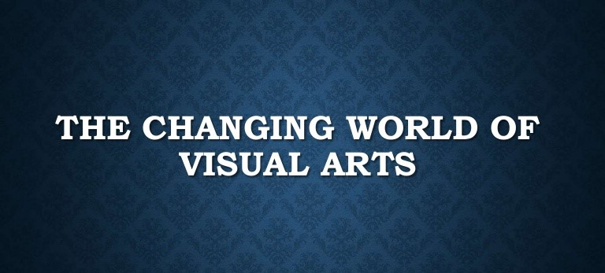
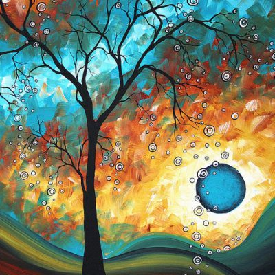

CBSE Class 8 History The Changing World of Visual Arts National Art
National Art
Summary

Ravi Varma belonged to the princely state of Travancore in Kerala. He was trained in the European techniques of oil painting and realistic life study.
Raja Ravi Varma was amongst the first painters to fuse Indian tradition with European art. He painted scenes from Indian mythology, using western
techniques of shading and realism.
By the 1880s, Raja Ravi Varma set up his own printing press and picture production team. Copies of his paintings
were printed in large numbers and became easily affordable.
Abanindranath Tagore, the nephew of Rabindranath Tagore, and other artists belonging
to his group criticized and labeled Raja Ravi Varma’s paintings as too westernized and imitative. These artists drew inspiration from the ancient mural
paintings of the Ajanta and the miniature paintings of medieval India.
The Banished Yaksha of Kalidas’s poem Meghaduta, painted by Abanindranath
Tagore, is an example of the use of Japanese water colour landscapes in Indian art.
After the 1920s, many artists abandoned the painting style
popularized by Abanindranath Tagore. The new artists started painting on real life themes rather than ancient art forms like tribal designs and folk art.

For bookish PDF of "The Changing World of Visual Arts" , click here : -
A Great Bookish Pdf File